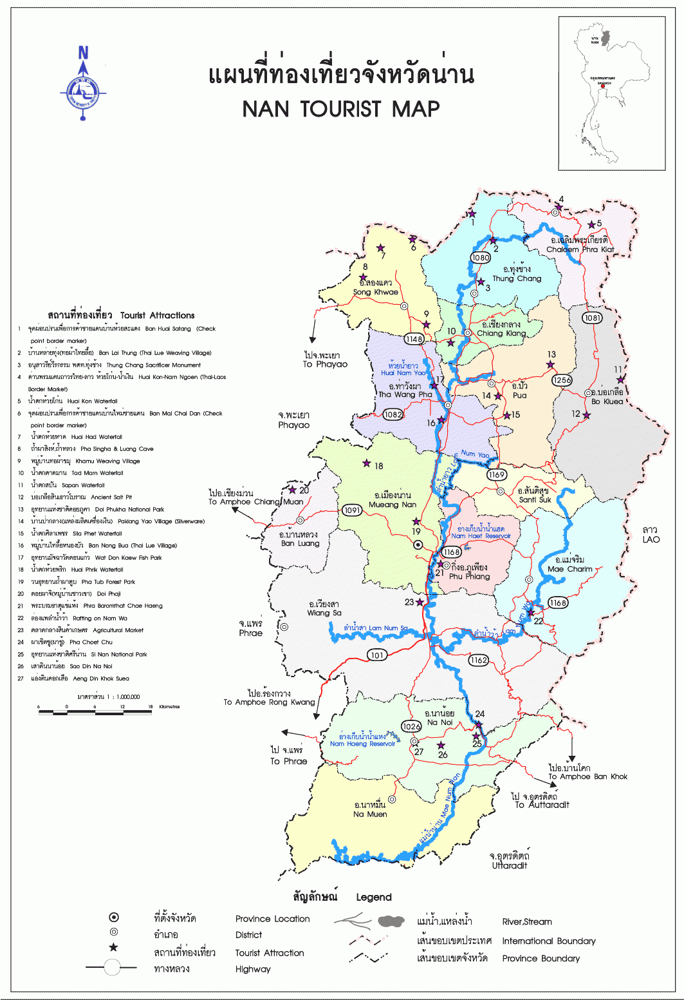

div>

ภูมิประเทศ
จังหวัดน่านมีสภาพภูมิประเทศส่วนใหญ่เป็นภูเขาซึ่งวางตัวในแนวเหนือ-ใต้ โดยเฉพาะบริเวณชายแดนด้านเหนือและตะวันออกซึ่งเป็นรอยต่อกับประเทศลาว
มีภูเข้ในเขตอำเภอบ่อเกลือ เป็นยอดเขาที่สูงที่สุดในจังหวัด คือมีความสูงถึง 2,079 เมตร[8] และมีดอยภูคาในเขตอำเภอปัว เป็นยอดเขาที่สำคัญของจังหวัด มีความสูง 1,980 เมตร
ส่วนพื้นที่ราบจะอยู่บริเวณตอนกลางของจังหวัด และตามลุ่มน้ำต่าง ๆ แหล่งน้ำที่สำคัญของจังหวัดคือแม่น้ำน่าน ซึ่งมีต้นกำเนิดทางตอนเหนือของจังหวัด แล้วไหลลงไปยังเขื่อนสิริกิติ์ในจังหวัดอุตรดิตถ์
และบรรจบกับแม่น้ำปิงที่จังหวัดนครสวรรค์เป็นแม่น้ำเจ้าพระยา นอกจากนี้ยังมีลำน้ำสาขาต่าง ๆ ที่สำคัญ ได้แก่ ลำน้ำสา ลำน้ำว้า ลำน้ำสมุน ลำน้ำปัว ลำน้ำยาว ลำน้ำย่าง ลำน้ำแหง เป็นต้น มีพื้นที่กว้างใหญ่
พื้นที่เต็มไปด้วยภูเขาสูงสลับซับซ้อน ทั้งยังมีประชากรหลายชาติพันธุ์ นับว่าเป็นดินแดนของความหลากหลายอีกแห่งหนึ่งของประเทศ